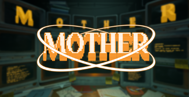

Game Project 3
Genre:
Engine:
Language(s):
Platform(s):
Duration:
Team size:
Puzzle
Godot
GDScript
PC
9 Weeks
10
In M0THER you play as an AI gained sentience, looking through the lenses of security cameras. Your goal is to guide packs of cute but oh so stupid creatures through the deadly maze of the testing facility. You accomplish this by manipulating the facility and modifying the creatures giving them certain abilities.

My main focus during this project was the various traps and interactables spread throughout the facility.
And making the tools to set up and connect traps and interactables in an intuitive way in the editor.
I wanted to build the systems to be modular and versatile,
so the designers could use them to create unique puzzles and interactions by just tweaking the values.
Trailer for M0THER, made by Philip Olsén